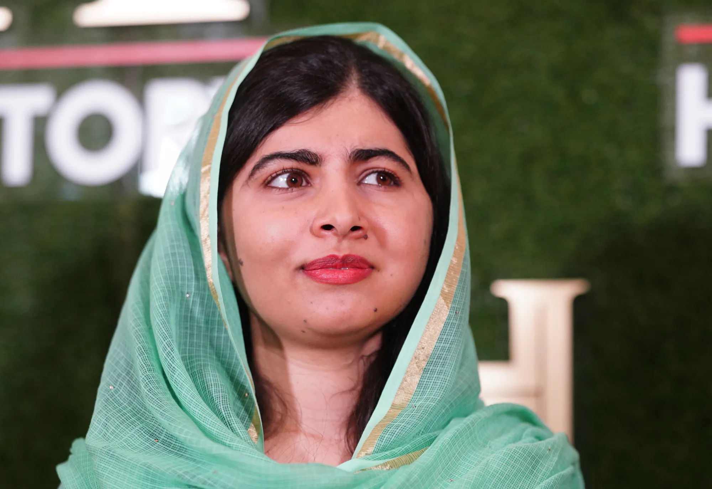

Malala Yousafzai is a Pakistani activist known for her courageous fight for girls' education in the face of adversity.
She was born on July 12th, 1997 and gave her UN speech on July 122013.
Malala survived a Taliban assassination attempt in 2012.
She later co-authored the memoir I Am Malala.
Written by: Supporters of Malala
Contact: malala@example.com
Malala continues to inspire millions around the world
The UN awarded her the title of Messenger of Peace.
Her speech to the United Nations became iconic.
Education
She was once told to stay silent raise her voice.
Some critics tried to undermine her efforts, but she persevered.
